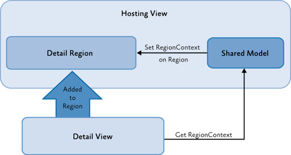

Communicating Between Loosely Coupled Components Using the Prism Library for WPF
When building large complex WPF applications, a common approach is to divide the functionality into discrete module assemblies. It is also desirable to minimize the use of static references between these modules, which can be accomplished through the use of delegate commands, region context, shared services, and event aggregator. This allows the modules to be independently developed, tested, deployed, and updated, and it forces loosely coupled communication. This topic provides guidance when to use delegate commands and routed commands and when to use event aggregator and .NET framework events.
When communicating between modules, it is important that you know the differences between the approaches so that you can best determine which approach to use in your particular scenario. The Prism Library provides the following communication approaches:
- Solution commanding. Use when there is an expectation of immediate action from the user interaction.
- Region context. Use this to provide contextual information between the host and views in the host's region. This approach is somewhat similar to the DataContext, but it does not rely on it.
- Shared services. Callers can call a method on the service which raises an event to the receiver of the message. Use this if none of the preceding is applicable.
- Event aggregation. For communication across view models, presenters, or controllers when there is not a direct action-reaction expectation.
Solution Commanding
If you need to respond to a user gesture, such as clicking on a command invoker (for example, a button or menu item), and if you want the invoker to be enabled based on business logic, use commanding.
Windows Presentation Foundation (WPF) provides RoutedCommand, which is good at connecting command invokers, such as menu items and buttons, with command handlers that are associated with the current item in the visual tree that has keyboard focus.
However, in a composite scenario, the command handler is often a view model that does not have any associated elements in the visual tree or is not the focused element. To support this scenario, the Prism Library provides DelegateCommand, which allows you to call a delegate method when the command is executed, and CompositeCommand, which allows you to combine multiple commands. These commands are different from the built-in RoutedCommand, which will route command execution and handling up and down the visual tree. This allows you to trigger a command at a point in the visual tree and handle it at a higher level.
The CompositeCommand is an implementation of ICommand so that it can be bound to invokers. CompositeCommands can be connected to several child commands; when the CompositeCommand is invoked, the child commands are also invoked.
CompositeCommands support enablement. CompositeCommands listen to the CanExecuteChanged event of each one of its connected commands. It then raises this event notifying its invoker(s). The invoker(s) reacts to this event by calling CanExecute on the CompositeCommand. The CompositeCommand then again polls all its child commands by calling CanExecute on each child command. If any call to CanExecute returns false, the CompositeCommand will return false, thus disabling the invoker(s).
How does this help you with cross module communication? Applications based on the Prism Library may have global CompositeCommands that are defined in the shell that have meaning across modules, such as Save, Save All, and Cancel. Modules can then register their local commands with these global commands and participate in their execution.
Note: DelegateCommand and CompositeCommand can be found in the Prism.Commands namespace which is located in the Prism.Core NuGet package.
About WPF Routed Events and Routed Commands
A routed event is a type of event that can invoke handlers on multiple listeners in an element tree, instead of notifying only the object that directly subscribed to the event. WPF-routed commands deliver command messages through UI elements in the visual tree, but the elements outside the tree will not receive these messages because they only bubble up or down from the focused element or an explicitly stated target element. Routed events can be used to communicate through the element tree, because the event data for the event is perpetuated to each element in the route. One element could change something in the event data, and that change would be available to the next element in the route.
Therefore, you should use WPF routed events in the following scenarios: defining common handlers at a common root or defining your own custom control class.
Creating a Delegate Command
To create a delegate command, instantiate a DelegateCommand field in the constructor of your view model, and then expose it as an ICommand property.
// ArticleViewModel.cs
public class ArticleViewModel : BindableBase
{
private readonly ICommand showArticleListCommand;
public ArticleViewModel(INewsFeedService newsFeedService,
IRegionManager regionManager,
IEventAggregator eventAggregator)
{
this.showArticleListCommand = new DelegateCommand(this.ShowArticleList);
}
public ICommand ShowArticleListCommand
{
get { return this.showArticleListCommand; }
}
}
Creating a Composite Command
To create a composite command, instantiate a CompositeCommand field in the constructor, add commands to it, and then expose it as an ICommand property.
public class MyViewModel : BindableBase
{
private readonly CompositeCommand saveAllCommand;
public ArticleViewModel(INewsFeedService newsFeedService,
IRegionManager regionManager,
IEventAggregator eventAggregator)
{
this.saveAllCommand = new CompositeCommand();
this.saveAllCommand.RegisterCommand(new SaveProductsCommand());
this.saveAllCommand.RegisterCommand(new SaveOrdersCommand());
}
public ICommand SaveAllCommand
{
get { return this.saveAllCommand; }
}
}
Making a Command Globally Available
Typically, to create a globally available command, create an instance of the DelegateCommand or the CompositeCommand and expose it through a static class.
public static class GlobalCommands
{
public static CompositeCommand MyCompositeCommand = new CompositeCommand();
}
In your module, associate child commands to the globally available command.
GlobalCommands.MyCompositeCommand.RegisterCommand(command1);
GlobalCommands.MyCompositeCommand.RegisterCommand(command2);
Note: To increase the testability of your code, you can use a proxy class to access the globally available commands and mock that proxy class in your tests.
Binding to a Globally Available Command
The following code example shows how to bind a button to the command in WPF.
<Button Name="MyCompositeCommandButton" Command="{x:Static local:GlobalCommands.MyCompositeCommand}">Execute My Composite Command</Button>
Note: Another approach is to store the command as a resource inside the App.xaml file in the Application.Resources section. Then, in the view—which must be created after setting that resource—you can set Command="{Binding MyCompositeCommand, Source={StaticResource GlobalCommands}}" to add an invoker to the command.
Region Context
There are a lot of scenarios where you might want to share contextual information between the view that is hosting a region and a view that is inside a region. For example, a master detail–like view shows a business entity and exposes a region to show additional detail information for that business entity. The Prism Library uses a concept named RegionContext to share an object between the host of the region and any views that are loaded inside the region, as shown in the following illustration.

Depending on the scenario, you can choose to share a single piece of information (such as an identifier) or a shared model. The view can retrieve the RegionContext, and then sign up for change notifications. The view can also change the RegionContext's value. There are several ways of exposing and consuming the RegionContext:
- You can expose RegionContext to a region in Extensible Application Markup Language (XAML).
- You can expose RegionContext to a region in code.
- You can consume RegionContext from a view inside a region.
Note: The Prism Library currently only supports consuming the RegionContext from a view inside a region if that view is a DependencyObject. If your view is not a DependencyObject (for example, you are using WPF automatic data templates and adding your view model directly in the region), consider creating a custom RegionBehavior to forward the RegionContext to your view objects.
About the Data Context Property
Data context is a concept that allows elements to inherit information from their parent elements about the data source that is used for binding. Child elements automatically inherit the DataContext of their parent element. The data flows down the visual tree.
Shared Services
Another method of cross-module communication is through shared services. When the modules are loaded, modules add their services to the service locator. Typically, services are registered and retrieved from a service locator by common interface types. This allows modules to use services provided by other modules without requiring a static reference to the module. Service instances are shared across modules, so you can share data and pass messages between modules.
In the Stock Trader Reference Implementation (Stock Trader RI), the Market module provides an implementation of IMarketFeedService. The Position module consumes these services by using the shell application's dependency injection container, which provides service location and resolution. The IMarketFeedService is meant to be consumed by other modules, so it can be found in the StockTraderRI.Infrastructure common assembly, but the concrete implementation of this interface does not need to be shared, so it is defined directly in the Market module and can be updated independently of other modules.
To see how these services are exported into MEF, see the MarketFeedService.cs and MarketHistoryService.cs files, as shown in the following code example. The Position module's ObservablePosition receives the IMarketFeedService service through constructor dependency injection.
// MarketFeedService.cs
[Export(typeof(IMarketFeedService))]
[PartCreationPolicy(CreationPolicy.Shared)]
public class MarketFeedService : IMarketFeedService, IDisposable
{
...
}
This helps with cross-module communication because service consumers do not need a static reference to modules providing the service. This service can be used to send or receive data between modules.
Note: Some dependency injection containers allow the registration of dependencies using attributes, as shown in this example. Other containers may use explicit registration. In these cases, the registration typically occurs during module loading when Prism invokes the IModule.Initialize method. See Modular Application Development for more information.
Event Aggregation
The Prism Library provides an event mechanism that enables communications between loosely coupled components in the application. This mechanism, based on the event aggregator service, allows publishers and subscribers to communicate through events and still do not have a direct reference to each other.
The EventAggregator provides multicast publish/subscribe functionality. This means there can be multiple publishers that raise the same event and there can be multiple subscribers listening to the same event. Consider using the EventAggregator to publish an event across modules and when sending a message between business logic code, such as controllers and presenters.
One example of this, from the Stock Trader RI, is when the Process Order button is clicked and the order successfully processes; in this case, other modules need to know the order is successfully processed so they can update their views.
Events created with the Prism Library are typed events. This means you can take advantage of compile-time type checking to detect errors before you run the application. In the Prism Library, the EventAggregator allows subscribers or publishers to locate a specific EventBase. The event aggregator also allows for multiple publishers and multiple subscribers, as shown in the following illustration.

About .NET Framework Events
Using .NET Framework events is the most simple and straightforward approach for communication between components if loose coupling is not a requirement. Events in the .NET Framework implement the Publish-Subscribe pattern, but to subscribe to an object, you need a direct reference to that object, which, in composite applications, typically resides in another module. This results in a tightly coupled design. Therefore, .NET Framework events are used for communication within modules instead of between modules.
If you use .NET Framework events, you have to be very careful of memory leaks, especially if you have a non-static or short-lived component that subscribes to an event on a static or longer-lived one. If you do not unsubscribe the subscriber, it will be kept alive by the publisher, and this will prevent the first one from being garbage-collected.
IEventAggregator
The EventAggregator class is offered as a service in the container and can be retrieved through the IEventAggregator interface. The event aggregator is responsible for locating or building events and for keeping a collection of the events in the system.
public interface IEventAggregator
{
TEventType GetEvent<TEventType>() where TEventType : EventBase;
}
The EventAggregator constructs the event on its first access if it has not already been constructed. This relieves the publisher or subscriber from needing to determine whether the event is available.
PubSubEvent
The real work of connecting publishers and subscribers is done by the PubSubEvent class. This is the only implementation of the EventBase class that is included in the Prism Library. This class maintains the list of subscribers and handles event dispatching to the subscribers.
The PubSubEvent class is a generic class that requires the payload type to be defined as the generic type. This helps enforce, at compile time, that publishers and subscribers provide the correct methods for successful event connection. The following code shows a partial definition of the PubSubEvent class.
Note: PubSubEvent can be found in the Prism.Events namespace which is located in the Prism.Core NuGet package.
// PubSubEvent.cs
public class PubSubEvent<TPayload> : EventBase
{
...
public SubscriptionToken Subscribe(Action<TPayload> action);
public SubscriptionToken Subscribe(Action<TPayload> action, ThreadOption threadOption);
public SubscriptionToken Subscribe(Action<TPayload> action, bool keepSubscriberReferenceAlive)
public SubscriptionToken Subscribe(Action<TPayload> action, ThreadOption threadOption, bool keepSubscriberReferenceAlive)
public virtual SubscriptionToken Subscribe(Action<TPayload> action, ThreadOption threadOption, bool keepSubscriberReferenceAlive);
public virtual SubscriptionToken Subscribe(Action<TPayload> action, ThreadOption threadOption, bool keepSubscriberReferenceAlive, Predicate<TPayload> filter);
public virtual void Publish(TPayload payload);
public virtual void Unsubscribe(Action<TPayload> subscriber);
public virtual bool Contains(Action<TPayload> subscriber)
...
}
Creating and Publishing Events
The following sections describe how to create, publish, and subscribe to PubSubEvent using the IEventAggregator interface.
Creating an Event
The PubSubEvent<TPayload> is intended to be the base class for an application's or module's specific events. TPayLoad is the type of the event's payload. The payload is the argument that will be passed to subscribers when the event is published.
For example, the following code shows the TickerSymbolSelectedEvent in the Stock Trader Reference Implementation (Stock Trader RI). The payload is a string containing the company symbol. Notice how the implementation for this class is empty.
public class TickerSymbolSelectedEvent : PubSubEvent<string>{}
Note: In a composite application, the events are frequently shared between multiple modules, so they are defined in a common place. In the Stock Trader RI, this is done in the StockTraderRI.Infrastructure project.
Publishing an Event
Publishers raise an event by retrieving the event from the EventAggregator and calling the Publish method. To access the EventAggregator, you can use dependency injection by adding a parameter of type IEventAggregator to the class constructor.
The following code demonstrates publishing the TickerSymbolSelectedEvent.
this.eventAggregator.GetEvent<TickerSymbolSelectedEvent>().Publish("STOCK0");
Subscribing to Events
Subscribers can enlist with an event using one of the Subscribe method overloads available on the PubSubEvent class. There are several ways to subscribe to PubSubEvents. Use the following criteria to help determine which option best suits your needs:
- If you need to be able to update UI elements when an event is received, subscribe to receive the event on the UI thread.
- If you need to filter an event, provide a filter delegate when subscribing.
- If you have performance concerns with events, consider using strongly referenced delegates when subscribing and then manually unsubscribe from the PubSubEvent.
- If none of the preceding is applicable, use a default subscription.
The following sections describe these options.
Subscribing on the UI Thread
Frequently, subscribers will need to update UI elements in response to events. In WPF, only a UI thread can update UI elements.
By default, the subscriber receives the event on the publisher's thread. If the publisher sends the event from the UI thread, the subscriber can update the UI. However, if the publisher's thread is a background thread, the subscriber may be unable to directly update UI elements. In this case, the subscriber would need to schedule the updates on the UI thread using the Dispatcher class.
The PubSubEvent provided with the Prism Library can assist by allowing the subscriber to automatically receive the event on the UI thread. The subscriber indicates this during subscription, as shown in the following code example.
public void Run()
{
...
this.eventAggregator.GetEvent<TickerSymbolSelectedEvent>().Subscribe(ShowNews, ThreadOption.UIThread);
);
}
public void ShowNews(string companySymbol)
{
this.articlePresentationModel.SetTickerSymbol(companySymbol);
}
The following options are available for ThreadOption:
- PublisherThread. Use this setting to receive the event on the publishers' thread. This is the default setting.
- BackgroundThread. Use this setting to asynchronously receive the event on a .NET Framework thread-pool thread.
- UIThread. Use this setting to receive the event on the UI thread.
Note: In order for PubSubEvents to publish to subscribers on the UI thread, the EventAggregator must initially be constructed on the UI thread.
Subscription Filtering
Subscribers may not need to handle every instance of a published event. In these cases, the subscriber can use the filter parameter. The filter parameter is of type System.Predicate<TPayLoad> and is a delegate that gets executed when the event is published to determine if the payload of the published event matches a set of criteria required to have the subscriber callback invoked. If the payload does not meet the specified criteria, the subscriber callback is not executed.
Frequently, this filter is supplied as a lambda expression, as shown in the following code example.
FundAddedEvent fundAddedEvent = this.eventAggregator.GetEvent<FundAddedEvent>();
fundAddedEvent.Subscribe(FundAddedEventHandler, ThreadOption.UIThread, false,
fundOrder => fundOrder.CustomerId == this.customerId);
Note: The Subscribe method returns a subscription token of type Prism.Events.SubscriptionToken that can be used to remove a subscription to the event later. This token is particularly useful when you are using anonymous delegates or lambda expressions as the callback delegate or when you are subscribing the same event handler with different filters.
Note: It is not recommended to modify the payload object from within a callback delegate because several threads could be accessing the payload object simultaneously. You could have the payload be immutable to avoid concurrency errors.
Subscribing Using Strong References
If you are raising multiple events in a short period of time and have noticed performance concerns with them, you may need to subscribe with strong delegate references. If you do that, you will then need to manually unsubscribe from the event when disposing the subscriber.
By default, PubSubEvent maintains a weak delegate reference to the subscriber's handler and filter on subscription. This means the reference that PubSubEvent holds on to will not prevent garbage collection of the subscriber. Using a weak delegate reference relieves the subscriber from the need to unsubscribe and allows for proper garbage collection.
However, maintaining this weak delegate reference is slower than a corresponding strong reference. For most applications, this performance will not be noticeable, but if your application publishes a large number of events in a short period of time, you may need to use strong references with PubSubEvent. If you do use strong delegate references, your subscriber should unsubscribe to enable proper garbage collection of your subscribing object when it is no longer used.
To subscribe with a strong reference, use the keepSubscriberReferenceAlive parameter on the Subscribe method, as shown in the following code example.
FundAddedEvent fundAddedEvent = eventAggregator.GetEvent<FundAddedEvent>();
bool keepSubscriberReferenceAlive = true;
fundAddedEvent.Subscribe(FundAddedEventHandler, ThreadOption.UIThread, keepSubscriberReferenceAlive, fundOrder => fundOrder.CustomerId == _customerId);
The keepSubscriberReferenceAlive parameter is of type bool:
When set to true, the event instance keeps a strong reference to the subscriber instance, thereby not allowing it to get garbage collected. For information about how to unsubscribe, see the section Unsubscribing from an Event later in this topic.
When set to false (the default value when this parameter omitted), the event maintains a weak reference to the subscriber instance, thereby allowing the garbage collector to dispose the subscriber instance when there are no other references to it. When the subscriber instance gets collected, the event is automatically unsubscribed.
Default Subscriptions
For a minimal or default subscription, the subscriber must provide a callback method with the appropriate signature that receives the event notification. For example, the handler for the TickerSymbolSelectedEvent requires the method to take a string parameter, as shown in the following code example.
public TrendLineViewModel(IMarketHistoryService marketHistoryService, IEventAggregator eventAggregator)
{
... eventAggregator.GetEvent<TickerSymbolSelectedEvent>().Subscribe(this.TickerSymbolChanged);
}
public void TickerSymbolChanged(string newTickerSymbol)
{
MarketHistoryCollection newHistoryCollection = this.marketHistoryService.GetPriceHistory(newTickerSymbol);
this.TickerSymbol = newTickerSymbol;
this.HistoryCollection = newHistoryCollection;
}
Unsubscribing from an Event
If your subscriber no longer wants to receive events, you can unsubscribe by using your subscriber's handler or you can unsubscribe by using a subscription token.
The following code example shows how to directly unsubscribe to the handler.
FundAddedEvent fundAddedEvent = this.eventAggregator.GetEvent<FundAddedEvent>();
fundAddedEvent.Subscribe(FundAddedEventHandler, ThreadOption.PublisherThread);
fundAddedEvent.Unsubscribe(FundAddedEventHandler);
The following code example shows how to unsubscribe with a subscription token. The token is supplied as a return value from the Subscribe method.
FundAddedEvent fundAddedEvent = this.eventAggregator.GetEvent<FundAddedEvent>();
subscriptionToken = fundAddedEvent.Subscribe(FundAddedEventHandler, ThreadOption.UIThread, false, fundOrder => fundOrder.CustomerId == this.customerId);
fundAddedEvent.Unsubscribe(subscriptionToken);
More Information
For more information about weak references, see Weak References on MSDN.